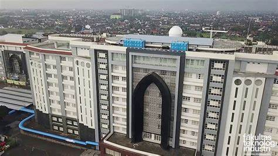

Perkenalkan nama saya Ines Triseptiani. Ini adalah homepage pertama saya, karena saya baru belajar
tentang cara homepage. Homepage ini masih dalam tahap pengembangan, oleh karena itu tampilannya masih terlalu
 sederhan. Saya akan berusaha untuk terus memperbaiki homepage saya ini,
sehingga makin lama semakin menarik dilihat.
sederhan. Saya akan berusaha untuk terus memperbaiki homepage saya ini,
sehingga makin lama semakin menarik dilihat.
Saya ingin melihat halaman selanjutnya. Saya ingin langsung menuju ke bagian akhir.
Saya ingin menuju ke bagian bawah pada halaman selanjutnya.
Homapage detik.com.
Ini bagian tengah.
ini bagian akhir.